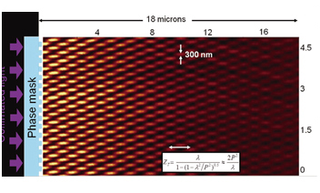
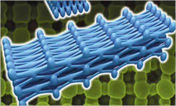
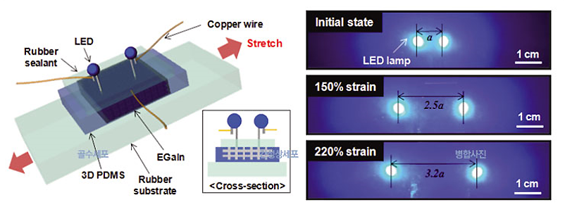

연구성과 10선
연구성과 10선
KAIST RESEARCH ACHIEVEMENTS
컴퓨터, 이제 옷처럼 입거나
안경처럼 쓰고 다니자
신소재공학과 · 나노융합연구소 전석우
요약
2030년 지난 40년간 노트북, 핸드폰을 비롯한 여러 가지 형태의 휴대용 컴퓨터를 가지고 다니는 '포터블 시대'를 지나 소재기술과 통신기술 등의 발전에 힘입어 몸에 지니는, 입고 다니는 '웨어러블 시대'에 접어들었다. 의복이나 시계, 안경과 같은 악세서리에 기능이 통합된 일체형 컴퓨터를 착용하거나 피부와 같은 소재의 컴퓨터를 문신처럼 부착하고 다니면서 언제 어디서든지 컴퓨터와 네트워킹을 하여 사용할 수 있는 '유비쿼터스 컴퓨팅 시스템'이 실현가능하게 되어 인간의 삶의 형태가 완전히 변하게 된다.
연구내용
지금까지 유연한 디스플레이, 웨어러블 컴퓨터와 같은 차세대 신축성 소자와 관련된 기술들은 대부분 해외연구기관에서 선행연구를 진행하여 원천특허를 보유하고 있다. 하지만 여전히 표준화가 될 만한 핵심기술은 나오지 않은 상황이 고, 이러한 시점에서 초신축성 소재를 구현할 수 있는 새로운 메커니즘을 포함하는 혁신적인 원천기술을 국내 연구진이 주축이 되어 개발했다는 것은 큰 의미가 있다.
잡아당기면 고무줄처럼 늘어나는 전선을 상상해 본 적 있는가? 신축성과 전기전도성을 동시에 띠는 물질은 극히 드물다. 때문에 세계의 수많은 연구진은 유연하고 신축성 좋은 전자 소재를 개발하는 연구를 수행하고 있다. 이러한 전자 소자를 개발하면 '접거나 휘어지는 디스플레이'나 '옷처럼 입을 수 있는 컴퓨터'도 꿈은 아니기 때문이다. 신축성 좋은 전자소재를 개발하려면 새로운 물질을 합성할 수도 있지만 기존 물질의 특성을 향상할 수도 있다. 기상용화된 전도성 소재의 신축성을 향상하면 새로운 물질을 합성하기 위한 노력과 비용을 절감할 수 있으며, 검증된 소재를 이용하기 때문에 신뢰성이 높고, 기존에 사용하던 공정과 호환성이 있는 장점이 있다.
간첩현상 이용한 3차원 광학패터닝
표면에 나노 수준의 주기적인 돌기가 형성된 고무판에 패턴 주기와 비슷한 파장의 빛을 쬐면 회절현상에 의해 간섭무늬가 3차원적인 분포를 형성한다. '근접장 나노패터닝'이라 불리는 이 기술은 전석우 교수팀이 원천 특허를 가지고 있는데, 관련기술 중 광학을 이용하는 가장 진보된 기술로 다른 방법보다 빠르고 균일하게 대면적 3차원 나노구조를 형성할 수 있어 상용화에 가장 근접한 기술로 평가된다.
 그림 1. 근접장 나노패터닝 기술의 원리
주기적인 3차원 다공성 나노구조로 신축성 크게 향상해
 그림 2. 3차원 나노구조화된 초신축성 고무
그림 2. 3차원 나노구조화된 초신축성 고무 이 연구팀은 근접장 나노패터닝을 통하여 3차원 나노구조가 형성된 고분자 박막을 주형으로 활용하여 액상의 고무를 삽입하고 굳힌 후 주형만 선택적으로 제거함으로써 역상의 3차원 나노구조화된 고무를 제작했다. 이 소재를 잡아당기면 3차원으로 연결된 나노구조의 연결부위가 잡아당기는 방향으로 평행하게 회전하여 신축한계가 증가된다. 2차원 상에서 어망 또는 스타킹이 늘어나는 것과 비슷한 원리다. 실리콘고무를 3차원 나노구조화하였을 경우 실험적으로 최대 60% 이상 신축한계가 확장되는 것을 증명하였으며, 이러한 원리는 모든 상용 소재에 적용 가능한 장점이 있다.
액상의 금속 주입을 통한 세계최고 수준의 초신축성 전도체 구형
 그림 2. 3차원 나노구조화된 초신축성 고무
연구비 지원
- 파이오니아 사업, 힌국연구재단 & 교육과학기술부(20110001684)
- WCU 사업, 한국연구재단 & 교육과학기술부(R32-10051)
- 글로벌프론티어 사업, 한국연구재단 & 교육과학기술부(20110031630)
- 글로벌박사펠로우십, 한국연구재단 & 교육과학기술부
- KAIST 나노융합연구소(KINC), 그래핀연구센터(GRC)
연구실적
- 나노공정 및 소재 기술 관련 SCI급 국제 논문 47편(Science, PNAS, Nature Commun., Chem. Rev., Nano Lett., Adv. Mater., etc)
- 관련기술 국내 · 국제 핵심특허 출원 및 등록 20여건
- 관련연구 국제학술대회 발표 50여건
-‘3차원 초신축성 전극소재’ 개발 관련, 국내외 언론 40여곳 소개(국민일보, 한국경제, Science Daily, Materials Today, Scientific American, etc.)